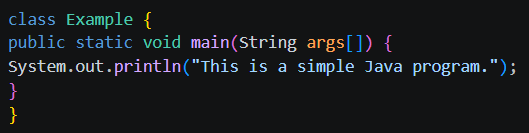
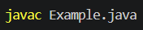
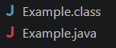
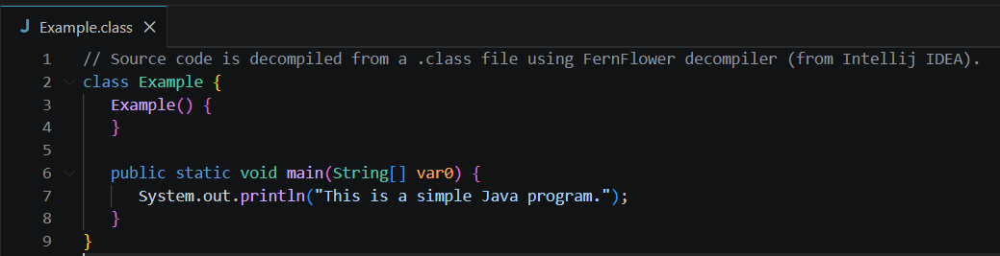
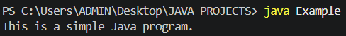
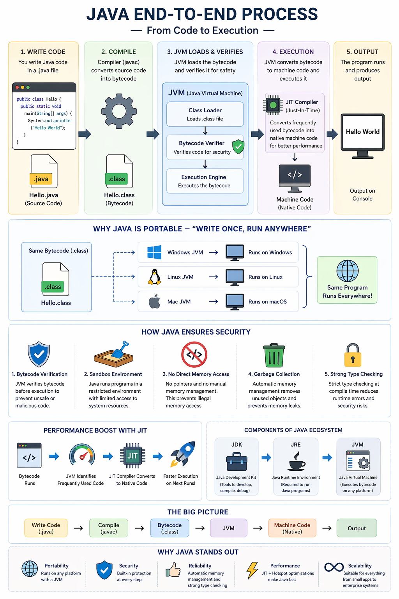

The Compilation Process
How Java compiles code, what bytecode is, how the JVM works — and why this design makes Java uniquely secure and portable.
In this chapter you'll learn the entire process of compiling a program in Java and how this process ensures security and portability while making Java stand out. In simple terms, compiling is the process of converting human-readable code into machine-readable code — done by a compiler that takes source code and translates it into executable instructions.
Writing the Source Code
The journey begins when a developer writes code in a .java file. This is known as source code, written in a human-readable format using Java syntax. For example, a simple program that prints "Hello World" is written in a structured, readable way so developers can easily understand and modify it. The following code is saved as Example.java:

Compilation to Bytecode
Once the code is written, it is compiled using the Java compiler javac:

Instead of converting the program directly into machine code, the compiler transforms it into an intermediate format called bytecode, which is stored in a .class file.

Here is a preview of the Example.class file created when Example.java is compiled using javac. Bytecode is not specific to any operating system or hardware — this is a crucial design decision that allows Java programs to be independent of the platform they run on.

Execution
Once the Example.class file is created, the bytecode is ready for execution. The program is finally executed using the syntax java Example

Java Virtual Machine (JVM)
The Java Virtual Machine (JVM) is the core component responsible for executing Java programs. When you run a Java application, the JVM loads the bytecode and prepares it for execution. The JVM performs three important tasks:
-
1
It loads the .class file using the class loader.
-
2
It verifies the bytecode to ensure it is safe and does not violate any rules.
-
3
It executes the program by converting bytecode into machine code.
This layered approach separates Java programs from the underlying system, enabling flexibility and safety.
Execution Process
After verification, the JVM translates bytecode into machine code the system can understand. This happens either through interpretation (line-by-line execution) or using a Just-In-Time (JIT) compiler, which converts frequently used parts of the code into native machine code for faster performance.
Write Once, Run Anywhere
Since Java programs compile into bytecode instead of machine code, the same .class file can run on any system with a JVM installed — whether Windows, Linux, or macOS.
Security Features
Java is designed with strong security mechanisms to prevent harmful code execution:
- The JVM includes a bytecode verifier that checks code before execution, preventing unsafe operations and illegal memory access.
- Java does not allow direct memory manipulation through pointers (unlike C or C++), eliminating many common vulnerabilities.
- Java programs run inside a controlled sandbox, restricting access to system resources unless explicitly permitted.
- Java uses automatic memory management (garbage collection), which removes unused objects from memory, reducing the risk of memory leaks.
Performance with JIT
Although Java adds an extra step with the JVM, it still achieves high performance using the Just-In-Time (JIT) compiler. The JIT identifies frequently executed parts of the program and converts them into native machine code. Over time, Java programs can run nearly as fast as fully compiled languages — while maintaining portability and security.
The Java Ecosystem
Java provides a complete ecosystem to support development and execution:
JDK
Java Development Kit
Includes tools like the compiler needed to develop Java applications.
JRE
Java Runtime Environment
Provides the libraries and environment required to run Java programs.
JVM
Java Virtual Machine
Executes bytecode and acts as a bridge between program and system.
